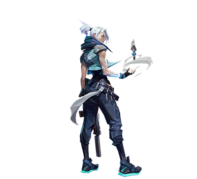
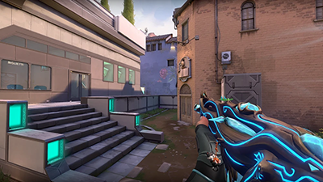
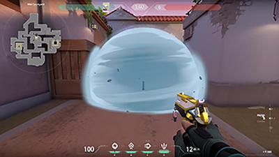
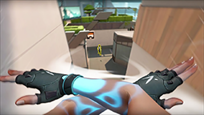
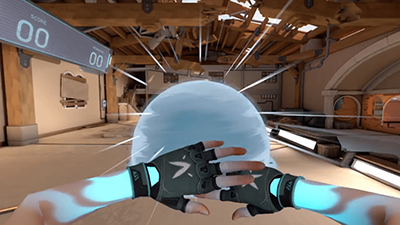
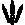
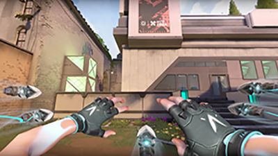

Personalidade: Jett é frequentemente retratada como confiante e um pouco arrogante, mas também se importa com seus companheiros de equipe, embora tenha dificuldade em demonstrar. Design: Seu visual inclui um coque branco, roupas azuis com símbolos do vento e uma cicatriz abaixo do ombro esquerdo, resultado de um ferimento de bala. Insa-dong: Um detalhe interessante é que o spray que Jett usa no jogo contém caracteres coreanos que, possivelmente, significam "Insa-dong", um bairro famoso em Seul. Essas são algumas das curiosidades e características marcantes da personagem Jett em Valorant, que a tornam uma escolha popular entre os jogadores que buscam um estilo de jogo rápido e dinâmico.
Sobre a Jett
Jett é uma agente sul-coreana de VALORANT, conhecida por sua mobilidade e estilo de jogo agressivo. Sendo a 10ª Agente a se juntar ao PROTOCOLO VALORANT . Vindo da Coreia do Sul, ela usa suas habilidades ágeis e evasivas para isolar os inimigos. Ela corre em círculos em cada escaramuça, cortando os inimigos antes mesmo que eles percebam o que os atingiu.

Skills
Ao usar seus poderes radiantes para manipular o vento, espirais de ar branco envolvem os braços de Jett como marcas
Passiva-
A passiva chamada a "deriva" da jett consiste em você planar, apertando o Espaço

Smoke- 
Jett lança uma orbe de vendo que bloqueia a visão do inimigo

Updraft-
Jett se lança no ar para subir em objetos por exemplo uma caixa

Dash-
Jett se lança para os lados usando uma corrente de vento

Ult- 
Jett embue vento as facas e lança contra os inimigos

Agora uma aula de como jogar de jett feita pelo FRTTT
Extras sobre a Jett
Então é isso espero que tenham curtido esse site que eu fiz sobre a Jett.